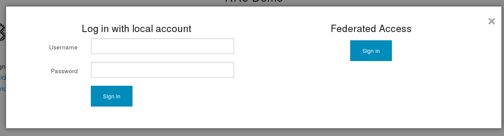

Authentication¶
Enable Federated access¶
JAGGER supports both local authentication and federated access. Right now shibboleth-sp is supported. There will be support for simpleSAMLphp too.
Obviusly you need to have shibboleth-sp configured.
Enable federated access in JAGGER
Find and set following keywords in Configuration files :
autoregister_federated, register_defaultrole, Shib_required, Shib_username, Shib_mail, Shibboleth
Next thing is to protect specific URI in apache with shibboleth. Here is example part from apache config.
Note
remove or replace ALIAS with your base location for JAGGER
<Location /ALIAS/auth/fedauth> Options -Indexes FollowSymLinks MultiViews Order allow,deny Allow from all AuthType shibboleth ShibRequireSession On require valid-user </Location> <Location /ALIAS/index.php/auth/fedauth> Options -Indexes FollowSymLinks MultiViews Order allow,deny Allow from all AuthType shibboleth ShibRequireSession On require valid-user </Location>
You may also want to enable embeded DiscoveryService. To get this working you need to have DiscoFeed enabled in shibboleth2.xml file:
<Handler type="DiscoveryFeed" Location="/DiscoFeed"/>
enable and set as default
<SessionInitiator type="Chaining" Location="/DS" id="DS" isDefault="true" relayState="cookie"> <SessionInitiator type="SAML2" acsIndex="1" template="bindingTemplate.html"/> <SessionInitiator type="Shib1" acsIndex="5"/> <SessionInitiator type="SAMLDS" URL="https://yourHOST/ALIAS/eds"/> </SessionInitiator>
Note
replace URL=”https://yourHOST/ALIAS/eds” with yours
Now you should be able to see both local authentication part and federated access.
You can decide what kind of access (local authn or/and federated access) can be used by user. If you create user and set only federated access then even there is password set during creation user can’t login using local authentication.
There are three possibilites:
- only local authentication
- only federated access
- bot local authentication and federated access
Two factor authentication¶
Support for 2F authentication is available. Right now “Duo” https://www.duosecurity.com/ is supported To enable and allow enduser set 2f authentication you need to set few options in config_rr.php file Configuration files
twofactorauthn - global option to enable/disable 2f (config_rr.php) , if option is not set then it’s false
$config['twofactorauthn'] = true;
2fengines - global option to control what kind of 2f engines are available/allowed. If not set then no engines available. As only “duo” is supported then
$config['2fengines'] = array('duo');
“Duo” 2F authentication¶
To enable and allow enduser to use 2F Duo you need:
- have proper integration setup on https://www.duosecurity.com/ and created the list of users/devices. Remember, during 2F process the username is the same as in jagger.
- as mentioned you need to following options to be set in config_rr.php file
$config['2fengines'] = array('duo');$config['twofactorauthn'] = true;
- and few more options need to be set
$config['duo-akey'] = 'YOUR_SECRET_RANDOM_MIN_40_CHARS_STRING'; $config['duo-skey'] = 'Secret key from DUO ADMIN SITE'; $config['duo-ikey'] = 'Integration key FROM DUO ADMIN SITE'; $config['duo-host'] = 'API hostname FROM DUO ADMIN SITE';
That’s all about jagger global configuration.
Enduser can now go to his profile, find section “Two factor authentication” and enable availabe 2F engine.

{kind=link}
{kind=link}
{kind=link}